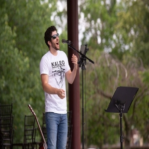

Jeremy
Jeremy is the youngest member of the POSSM. A former high school student of Earl’s, he spends most of his free time
swiping right on Tinder and driving from Mansfield to play shows in Hartford. Jeremy is POSSM’s Bass and sometimes lead
guitar player and reels in the cougars with his sexy riffs and sweet sweet vocals. Jer has earned his masters in Spanish
from ECSU and recently returned from a sabbatical living and working in Central America to immerse himself in the
langauge and culture.
When he is not playing with the POSSM Jer tours around the state doing solo performances of covers and his original music. Check out his pages below!